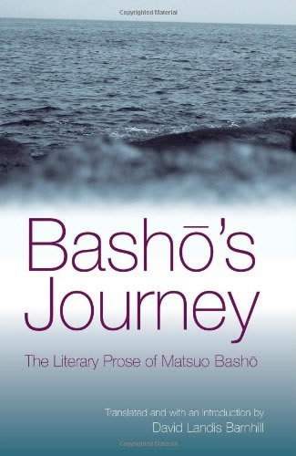

David Landis Barnhill
Hazelhurst, Wisconsin, USA
On the cultural context of “Ten Foot Square Hut”
Prof. Haruo Shirane has explained that classical Japanese literature, including haiku, is enriched by cultural depth that exceeds the pure experience of the mere present, and he has argued that contemporary haiku and haibun should do the same (“Beyond Haiku Moment,”Modern Haiku 30.1, 2000). I suggest that we rephrase this important point: rather than saying we should go beyond the haiku moment, we should recognize that the haiku moment itself goes beyond the mere present. It transcends not only the duality of self and other but also those of present and past, culture and nature. Literary tradition, history, and society—deeply interconnected with the natural world—can be experienced in the moment, and that complex experience embodied in haiku poetry and prose. This means that a full reading of such literature requires knowledge of these cultural dimensions—as it always has in Japanese literature.
One humble example is the haibun “Ten Foot Square Hut.” The title announces the link to Japanese culture: one of the most famous pieces of Japanese literary prose is the Hōjōki, “An Account of a Ten Foot Square Hut,” by the poet Kamo no Chōmei (1155-1216). But the principle allusions are to Bashō and his favorite poet, the monk Saigyō (1118-1190). The opening words echo a passage in Bashō’s first travel journal,Journal of Bleached Bones in a Field.
I wandered alone into the heart of Yoshino. The mountains were so deep. White clouds lay piled on the peaks, and misty rain filled the valley. The woodsmen’s tiny huts were scattered all around, and the sound of wood cut to the west echoed on the east. Temple bells struck to the base of my heart. From of old many who abandoned the world and entered these mountains fled into Chinese poetry, took refuge in Japanese verse. Surely one can call this Mount Lu, like the mountain in Cathay. (Bashō’s Journey: The Literary Prose of Matsuo Bashō, p. 17.)
Yoshino is an area south of the ancient capital of Kyōto. It is sometimes referred to as “Mount Yoshino,” but it is a mountainous area rather than a peak, more like “The Smoky Mountains” than “Mt. Rainier.” Yoshino has been famous since early times for thousands of cherry trees, and for thousands of poems about spring beauty. It also was known as a location for spiritual disciplines. Bashō particularly has in mind Saigyō, who lived in Yoshino and wrote some of his most deeply religious poems there. Even today there is a replica of his little hut with a statue of the monk-poet seated in meditation.
The Bashō passage begins by referring toYoshino no oku, the depths/interior/heart of Yoshino—with the same word used in the title of his last journal,Oku no hosomichi (The Narrow Road to the Deep North). But he is heading not only into the depths of the mountain but the depths of culture and history. Before the passage quoted above, he referred to Saigyō, and his readers knew that in coming to Yoshino he was arriving in the poetic home of the ancient monk-poet. In fact, the passage closely following the one above portrays his visit to “the remains of Saigyō’s hut,” and he writes a haiku that alludes to a verse written five centuries earlier by Saigyō.
The passage about Bashō’s entry into Yoshino contains references not only to Japanese culture but also to Chinese poets. So too he mentions as a mountainous area in China which he, nondualistically, equates with Yoshino. (Bashō uses an unusual and poetic term for China, which I have translated as “Cathay,” our own poetic term for China and the title of a collection of translations of Chinese verse by Ezra Pound.)
When I first looked into the hut to see the statue of Saigyō, I immediately thought of another piece of Japanese culture. Near Yoshino is Mt. Kōya, the mountain temple complex of Shingon Buddhism. The founder of Shingon was Kūkai (774-835), famous as a great Buddhist thinker, poet, and saint. At Kōya is a darkly moving cemetery with Kūkai’s mausoleum at its heart. Legend has it that inside the building, Kūkai still sits in eternal meditation, a presence I felt when I saw the statue of Saigyō.
Cultural references are not limited to explicit allusions. All readers of Bashō are familiar with the old pond haiku. In fact for some it has become a deep part of their psyche: the aesthetic structure of stillness, sudden movement, a brief sound, and silent reverberations. When I heard the sound of a fallen branch, I looked up to see trees moving like an echo in the sky, like ripples in a pond or the aftermath of a temple bell rung in the mountains.
The haiku literature we have been given has boundless depths: culture and nature, present and past, self and other. We are fortunate to be able to participate in that gift.
David Landis Barnhill is retired in the North Woods of Wisconsin, exploring lakes, forests, and hills, with loons, eagles, wolves, and more than a few mosquitoes and ticks. He was formerly Director of Environmental Studies and Professor of English at the University of Wisconsin Oshkosh, and before that Chair of Religious Studies at Guilford College. His translation of Bashō’s haiku,Bashō’s Haiku: Selected Poetry of Matsuo Basho (SUNY, 2004) includes over 700 haiku with a brief commentary on each. His bookBashō’s Journey: Selected Literary Prose by Matsuo Bashō(SUNY, 2005) is the most complete English translation of Bashō’s prose, including all five travel journals, his one diary, and eighty of his haibun. David has also published several articles on Bashō’s spirituality, Buddhist thought, American nature writing, and environmental philosophy, and he regularly taught Japanese Nature Writing. |